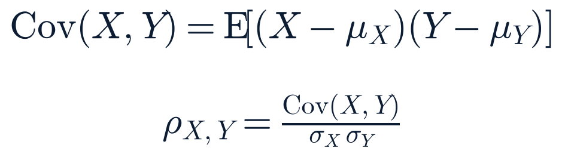

Monday, August 3, 2026 · Generated 6:15 AM ET · All times Eastern (America/New_York)
Overall confidence: Medium-HighMarkets: pre-market (opens 9:30 AM ET)
Generated
2026-08-03 06:15 ET (10:15 UTC)
News cutoff
2026-08-03 06:00 ET
Market data as of
Futures/FX/crypto: 05:31–05:52 ET live; cash equities/rates/vol: Fri Jul 31 close (EOD official)
Report version
1.0
Reading time
~34 minutes
Market status
Closed — opens 9:30 ET (full session, no holiday)
Data freshness by source:
Index/commodity futures — Delayed +10m (05:31–05:52 ET) ·
Cash equities & watchlist — Previous close (Fri Jul 31) ·
Treasury curve & FX — EOD official (Fri Jul 31) ·
Crypto — Live (CoinGecko) ·
FRED macro series — EOD official (obs. dates vary, noted per series) ·
Options put/call — Source unavailable (Cboe path 403, recurring) ·
Short interest — not applicable this cycle; daily short volume shown instead, settlement always 2–3wk stale
1 source unavailable this run — see System health footer.
Section 2Top Stories
Materially changedDisputed
Trump says an Iran deal is “imminent” and talks resume today; Iran says no agreement exists and the Strait of Hormuz “will remain closed”
Event: Sat night–Sun (Aug 1–2) statements · Published: rolling through Sunday · Last checked 06:00 ET Mon
What happened
President Trump said Sunday that US-Iran talks would resume Monday and that a deal is “imminent,” repeating his account that he called off a planned weekend strike on Iranian energy infrastructure at the request of Gulf allies (Saudi Arabia, UAE, Qatar) and Iran itself, with the outline covering a full reopening of the Strait of Hormuz and an end to Iran's nuclear threat. Iran's government has not confirmed this. Foreign Ministry spokesperson Esmail Baghaei said there is no immediate plan for direct US-Iran talks and that Tehran is engaged only with Oman on managing the Strait. Iran's Fars news agency stated flatly there is “no agreement on reopening the Strait of Hormuz” and that it “will remain closed” absent a change in US posture; Mehr quoted unnamed military officials calling Trump's claim a “new lie” meant to pressure Gulf rulers. Iran's acting Defense Minister separately said Trump's pullback statement was “psychological and media games” / “cognitive warfare,” adding Iran will not be taken by surprise.
Why it matters
The two governments are now on record with flatly contradictory accounts of whether a deal exists at all — not just its terms. Markets have already moved on Trump's framing (see Premarket Setup); if Iran's denial proves accurate, today's premarket pricing may not hold.
What is confirmed
Both sets of statements themselves (Trump's Truth Social/on-record remarks; Baghaei, Fars, Mehr, and the acting Defense Minister's statements) are Confirmed-multiple via wire and outlet reporting. FM Araghchi separately says Iran-Oman talks on Hormuz management specifically are in their “final stages” — a narrower, more plausible claim than a full US-Iran deal.
What remains uncertain
Whether any US-Iran deal exists in any form, what its actual terms are, and whether Monday's planned talks occur at all. No US government statement has directly rebutted Iran's denial as of this cutoff.
Context
This is the same weekend announcement covered in Sunday's Week-Ahead Outlook, now with Iran's government pushing back directly rather than only state media. It follows two unclaimed LNG-tanker attacks in/near the Strait of Hormuz (Gaslog Salem, Gaslog Shanghai) and a suspected Iran-linked water-utility cyberattack campaign (see below) — neither of which has stopped.
Impact
Markets/energy: WTI and Brent fell sharply in early trading (see Premarket Setup); equity futures rose broadly. Security: no confirmed change in force posture on either side.
What happens next
Whether Monday's US-Iran talks materialize at all; any US government statement addressing Iran's denial; any further Hormuz-area incident.
Sources: Trump statements via CNBC, Bloomberg, Washington Post, Axios, NPR (primary-adjacent, on-record) · Iranian officials via Ynet (citing Fars/Mehr), Al Jazeera, CNN live coverage (secondary, attributed) · market-reaction framing via CNBC/Reuters wire coverage (analysis).
Expanded analysis (collapsed by default)
This is the same pattern this conflict has shown before: a Trump de-escalation announcement, oil selling off and futures rallying on the news, then a same-weekend Iranian denial that markets have not yet had a chance to price against a live open. The Strait itself is reported by several outlets to remain largely closed to tanker traffic regardless of the diplomatic framing — a gap between the price action and the physical, on-the-water situation that argues for treating today's premarket moves as provisional rather than a settled read on the conflict's trajectory.
Nothing here asserts a single confirmed catalyst for the futures move; "coincided with" is the most this report will claim until a primary US or Iranian government source resolves the dispute one way or the other.
Materially changedConfirmed — multiple sources
Gaza disarmament roadmap: Israeli skepticism hardens as strikes continue over the weekend, undercutting the ceasefire framing
Event: Sat–Sun Aug 1–2 · Published: rolling Sunday · Last checked 06:00 ET Mon
What happened
The Board of Peace's 15-point Hamas disarmament roadmap (detailed last weekend) has not been formally accepted by Israel. Officials briefed reporters that Israel remains “deeply skeptical” the plan will produce genuine disarmament, with one senior US official cited as saying Israeli intelligence assesses Hamas intends to rebuild its military rather than disarm it. Itamar Ben-Gvir (Jewish Power) publicly called the roadmap unacceptable and said targeting Hamas leadership should continue. Separately, Israeli strikes in Gaza continued for a second straight day Sunday, with Gaza-side reporting of at least 13 Palestinians killed (one outlet cites as many as 17); an Israeli minister said there is no agreement to halt strikes.
Why it matters
A roadmap premised on an active, holding ceasefire is running alongside continued strikes and unresolved skepticism from a key party, with its own 14-day implementation clock approaching (forecast horizon ~Aug 13).
What is confirmed
Israeli skepticism and Ben-Gvir's public opposition (Confirmed-multiple: Jerusalem Post, Times of Israel, The Hill). Continued strikes and an Israeli minister's no-halt statement (Confirmed-multiple that strikes occurred; the precise toll is not).
What remains uncertain
The Gaza-side casualty count from the weekend strikes (Single-reliable-source to Confirmed-multiple depending on outlet, ranging roughly 13–17) is not independently verified and is treated here as Disputed pending confirmation. Whether Hamas's own position on the sequencing (disputed by a senior Hamas official last week) has shifted.
Context
Builds directly on the roadmap detailed in Saturday's and Sunday's editions; forecast 2026-07-31-pm-2 (roadmap not finalized on the ~Aug 13 schedule) remains open and, if anything, looks more likely to resolve toward “not finalized on schedule” given this weekend's developments.
Impact
Policy/diplomacy: the roadmap's credibility as an active process is weakening. Markets: no direct read-through identified this cycle.
What happens next
Whether Israel issues any formal response to the roadmap; whether strikes continue at this pace; any statement from the Board of Peace or International Stabilization Force partners.
Sources: Jerusalem Post, Times of Israel, The Hill (Israeli-side reporting and skepticism) · Gaza-side casualty reporting via NBC News and other outlets, figures vary 13–17 (Disputed) · prior-week Board of Peace primary announcement (carried forward).
Materially changedConfirmed — multiple sources
Blanche's AG nomination clears a hurdle: anti-weaponization fund rescinded, Cornyn on board for Tuesday's vote; Tillis still uncommitted
Event: Sun Aug 2 (fund rescinded; Cornyn agreement reported) · Last checked 06:00 ET Mon
What happened
Late Sunday, Acting Attorney General Todd Blanche signed a formal order rescinding the $1.8 billion “Anti-Weaponization Fund” established May 18, 2026, stating the order “is rescinded and shall have no force or effect.” This followed a Saturday exchange in which President Trump said he would push legislation to revive the fund if Sens. Cornyn and Tillis kept withholding support, and Tillis responded that Trump's comments proved “exactly why we are attempting to formally end it,” separately saying Blanche “will not be confirmed” absent resolution. Sunday-night documents also narrowed the DOJ-IRS settlement's audit-immunity addendum covering Trump/family tax returns — the specific provision Cornyn had objected to. A Cornyn spokesperson confirmed Sunday night his office reached an agreement with DOJ that could allow him to vote yes at Tuesday's committee session.
Why it matters
Removes the stated objection of one of the two Republican holdouts blocking the nomination; the second (Tillis) has not yet said how he will vote.
What is confirmed
The fund's rescission and Cornyn's agreement (Confirmed-multiple: Washington Post, NBC News, CNN, Fox News, CBS News, Axios).
What remains uncertain
Tillis's final position (Preliminary/unconfirmed — no statement from his office found as of this cutoff).
Context
The committee vote remains scheduled for Tuesday, August 4, 9:00 AM ET; no further postponement has been reported, a change from the pattern of the prior two weeks.
Impact
Policy/people: DOJ leadership question moves toward resolution this week. Markets: no direct read-through.
What happens next
Tillis's public position; Tuesday 9:00 AM ET committee vote.
Related assets (exposure ≠ direction)
n/a — low direct market relevance
Sources: Washington Post, NBC News, CNN, Fox News, CBS News, Axios, The Hill.
Materially changedConfirmed — multiple sources
Kumamoto earthquake death toll rises to 38 as recovery enters a new, longer phase
Event: ongoing since Jul 27 quake · Toll update: Sun Aug 2 · Last checked 06:00 ET Mon
What happened
Kumamoto prefectural authorities raised the confirmed death toll to 38 (from 36, where it had held since Saturday), including two fatalities still under review for direct quake linkage. Evacuee count is essentially unchanged at 9,226 across 210 shelters. Sub-tallies remain roughly 8–9 dead at the Nippon Paper Industries mill fire in Yatsushiro and 7 at the Kashima mall gas explosion.
Why it matters
First toll increase since the count stabilized Saturday, ending what had briefly looked like a plateau.
What is confirmed
Confirmed-multiple via Kumamoto prefectural government statements redistributed through Kyodo/Xinhua wire, Anadolu Agency, CGTN, and corroborated by Japan Times/Nippon.com.
What remains uncertain
Whether the two additional deaths under review will ultimately be attributed directly to the earthquake.
Context
Major transport routes (shinkansen, highways, flights) have reopened and volunteer debris-clearing began over the weekend in Mashiki — recovery-phase signals even as the toll ticked up. Officials estimate full reconstruction will take 2–3+ years; a funding dispute has emerged within the national government over an extra recovery budget. Thirty heatstroke transports were reported Saturday amid 37°C+ heat compounding conditions for the displaced.
Impact
Humanitarian: ongoing shelter and heat-safety strain. Markets: TSMC, Sony, and Tokyo Electron previously disclosed facility impacts; no new corporate disclosure found this cycle.
What happens next
Whether the two under-review deaths are confirmed as quake-related; national government's recovery-budget resolution.
Related assets (exposure ≠ direction)
TSM, EWJ (Japan-exposed, indirect)
Sources: Kumamoto prefectural government (primary, via wire) · Kyodo/Xinhua, Anadolu Agency, CGTN, Japan Times, Nippon.com.
NewConfirmed — multiple sources
Two firefighting helicopters collide over Greece's wildfire front, killing two crew members
Event: Sun Aug 2 · Last checked 06:00 ET Mon
What happened
Two firefighting helicopters collided mid-air near Psatha, west of Athens, Sunday while battling the Attica fire front. Both crew members of one aircraft — a Danish pilot and a Greek coordinator — were killed. The second aircraft's crew (a British pilot and a Greek liaison) survived with injuries. Greek Prime Minister Mitsotakis expressed condolences.
Why it matters
First aviation fatalities of Europe's ongoing wildfire season this summer, in a week that has already seen the threat spread across Turkey, Spain, Greece, England, Italy, and France.
What is confirmed
Confirmed-multiple (ABC News, CBS News, CNN, Euronews, Greek City Times).
What remains uncertain
Cause of the collision; any resulting grounding or review of aerial firefighting operations has not been reported.
Context
Greece separately saw roughly 60 new fire ignitions in a single day (Aug 1); a blaze at Porto Germeno on the Gulf of Corinth damaged up to 150 homes and required a seaborne rescue ~70km from Athens. Spain's Madrid-region and Zamora megafires have been downgraded, but new flare-ups hit León and Cáceres provinces (forcing evacuation of roughly 800 people combined). France's Bordeaux-area burn scar (roughly 4x the size of Paris) remains contained but guarded against reignition, while ~1,500 firefighters separately battle a Provence blaze. Turkey's fire front has shifted to the Aegean/Mediterranean coasts; the EU's rescEU fleet (22 aircraft, 5 helicopters, 777 pre-positioned firefighters — its largest deployment on record) remains active across 12 countries.
Impact
Humanitarian and aviation-safety; no market read-through identified.
What happens next
Investigation into the collision; whether Greece or the EU rescEU program adjusts aerial-firefighting protocols.
Related assets (exposure ≠ direction)
n/a
Sources: ABC News, CBS News, CNN, Euronews, Greek City Times, Jerusalem Post, Al Jazeera.
ContinuingPreliminary attribution
Water-utility cyberattack campaign: federal warnings harden, but Iran attribution remains officially preliminary despite one outlet's stronger claim
Event: ongoing since ~Jul 26–27 · Last checked 06:00 ET Mon
What happened
No new state or sector has been added to the campaign since Sunday; CISA, FBI, and EPA reiterated a joint advisory (following an FBI/EPA joint PSA dated Jul 30 and CISA guidance urging utilities to disconnect operational-technology systems from the internet entirely) describing attackers disabling programmable-logic-controller safety-shutdown and alarm logic and spoofing HMI/SCADA displays across water/wastewater systems in at least seven states, with Minnesota (~30–36 systems) and Michigan (9 systems) hit hardest. One outlet (TechRadar) headlined that the US government now “confirms” Iran's involvement — a firmer claim than officials' own public framing.
Why it matters
Whether this becomes a confirmed nation-state attack on US critical infrastructure — a materially different story than a preliminary, under-investigation one — is still unresolved by primary sources.
What is confirmed
The technical details and multi-state scope (Confirmed-multiple: CISA.gov, Tenable, NBC News, CNN, CBS News, ABC News). No contamination or water-quality impact has been reported.
What remains uncertain
Iran attribution remains Preliminary/unconfirmed by any primary US government statement this report could locate; the TechRadar claim of a firmer "confirmed" attribution could not be verified against CISA, FBI, or a named administration official and is treated here as unverified rather than adopted. Officials are also explicitly wary of false-flag activity, per CBS/ABC/CNN.
Context
Distinct from, but geopolitically adjacent to, the broader Iran-related developments above.
Impact
Critical infrastructure security policy; no confirmed operational/market impact.
What happens next
Any formal attribution statement from CISA/FBI/DHS; whether additional states disclose incidents.
Related assets (exposure ≠ direction)
HACK, CIBR (cybersecurity-sector context only)
Sources: CISA.gov, Tenable, NBC News, CNN, CBS News, ABC News, Al Jazeera, Time, Newsweek, TechRadar (unverified attribution claim, noted not adopted).
Materially changedConfirmed — multiple sources
DRC Ebola outbreak becomes the second-largest on record as Uganda formally closes its own chapter
Event: Uganda closure Jul 28; ranking confirmed over the weekend · Last checked 06:00 ET Mon
What happened
Uganda's Ministry of Health formally declared its portion of the outbreak over on July 28, twelve days after its last patient was discharged — a genuine milestone. Separately, multiple outlets confirmed the wider DRC-centered outbreak has become the second-largest Ebola outbreak on record, behind only the 2014–16 West Africa epidemic (28,616 cases/11,310 deaths), having surpassed the 2018–20 DRC Kivu outbreak's total case count in roughly two months. Case/death counts are unchanged from Sunday's report (3,626 confirmed cases: 3,605 DRC, 20 Uganda, 1 France; 1,589 deaths) — WHO's next epidemiological update, expected around Aug 3, was not retrievable as of this cutoff.
Why it matters
A rare piece of good news (a national chapter closed) inside a still-worsening regional emergency now formally ranked among history's largest.
What is confirmed
Uganda's closure: Confirmed-primary (national Ministry of Health statement, corroborated by WHO/wire coverage). The historical ranking: Confirmed-multiple (WHO, CDC, CNN, Al Jazeera).
What remains uncertain
Current DRC-specific case/death trajectory pending the next WHO update; no approved vaccine or treatment exists for this strain (Bundibugyo).
Context
Outbreak still spans five DRC provinces and 49 health zones as of the last confirmed count.
Impact
Public health; no direct market read-through identified.
What happens next
WHO's delayed epidemiological update; whether DRC's own case growth shows any deceleration.
Related assets (exposure ≠ direction)
n/a
Sources: WHO, CDC, CNN, Al Jazeera, ECDC (ranking); Uganda Ministry of Health (primary, closure).
Materially changedConfirmed — multiple sources
New critical vulnerabilities hit CISA's exploited-vulnerability catalog: Cisco Secure FMC and VMware/Broadcom flaws
Event: disclosed/added Jul 29–Aug 2 · Last checked 06:00 ET Mon
What happened
A Cisco Secure Firewall Management Center hard-coded-credential flaw (CVE-2026-20316, CVSS 5.3 but flagged high-severity for chainable privilege escalation) was added to CISA's Known Exploited Vulnerabilities catalog Jul 29, with a federal remediation deadline of Aug 1 that has already passed. Separately, Broadcom patched three critical VMware flaws affecting vCenter, ESXi, Cloud Foundation, and Workstation/Fusion: an authentication bypass in VMware Directory Service (CVE-2026-59309, CVSS 9.8), a vCenter Syslog directory-traversal/RCE flaw (CVE-2026-59310, CVSS 9.8), and a VMXNET3 out-of-bounds write (CVE-2026-47876, CVSS 9.3).
Why it matters
Two separate critical-severity disclosures affecting widely deployed enterprise infrastructure (network-security management and virtualization) in the same week.
What is confirmed
Confirmed-multiple for both (Cisco PSIRT, CISA, Broadcom advisory, The Hacker News, BleepingComputer).
What remains uncertain
The Arista VeloCloud CISA deadline (CVE-2026-16812) is reported inconsistently across outlets — some describe a Jul 30 BOD 26-04 deadline already passed, one describes Aug 7 as a first compliance milestone. This report could not resolve the discrepancy against CISA's own catalog entry and flags it as Disputed pending direct verification.
Context
Also this week: an N-able N-central authentication-bypass flaw exploited in the wild was patched Aug 2 (build 2026.3.1.7); a critical (CVSS 10.0) Adobe Campaign Classic arbitrary-code-execution flaw was patched. Fortinet FortiOS (CVE-2025-68686) KEV deadline remains Aug 10, unchanged.
Impact
IT/security operations across enterprises running affected Cisco or VMware/Broadcom infrastructure; no confirmed exploitation-in-the-wild for the new VMware CVEs as of this cutoff (patches issued proactively).
What happens next
Federal agency compliance reporting on the passed Cisco deadline; resolution of the VeloCloud deadline discrepancy.
SpaceX heads into its most consequential week as a public company: first earnings Tuesday, $116B lockup expiration Thursday
Event: ongoing into Aug 4–6 · Last checked 06:00 ET Mon
What happened
SpaceX (SPCX) reports its first-ever quarterly results as a public company Tuesday, August 4, after the close, two days before roughly 911.5 million shares (~$116B at recent prices, expanding tradeable float from ~4.9% to ~12% of shares outstanding) unlock on Thursday, August 6. Visible Alpha consensus is roughly $6.9B Q2 revenue and a $0.23/share loss; analysts are watching Starlink subscriber growth (recently reported past 10 million active users), the Connectivity segment's estimated 35.9% margin offsetting Space/AI-segment losses, AI-unit revenue tied to compute-leasing arrangements (including with Anthropic and Alphabet infrastructure), and any Starship commercial-timeline update. The stock closed Friday at $108.37, a fresh post-IPO (and all-time, given the ticker's SpaceX-only history since June 12) low, down roughly 49% from its post-IPO high near $211.
Why it matters
A first-ever earnings print and a lockup expiration that alone exceeds the entire post-IPO float, arriving in the same week, with the stock already at a fresh low and showing this system's highest single-name short-volume ratio in the watchlist Friday (71.8% of trading volume, though daily short volume is not the same as short interest).
What is confirmed
Confirmed-multiple on all scheduling and consensus figures (S&P Global, Motley Fool, TipRanks, Investing.com); Friday's closing price and technical levels are this system's own data.
What remains uncertain
Reported Cantor Fitzgerald supportive commentary ahead of earnings could not be independently verified in full and is treated as lower-confidence. Last week's heat-shield critique from three former NASA-connected figures (calling Starship's tile-based thermal protection system a “dead end” for rapid reuse) has seen no company or independent-expert response since.
Context
Forecast 2026-08-02-sun-4 (SPCX moves >8% the session after Tuesday's earnings) remains open.
Impact
Markets: single-name volatility risk; sector: read-through for the broader space watchlist (RKLB, ASTS, LUNR, RDW, and others).
What happens next
Tuesday's earnings print and reaction; Thursday's lockup expiration.
Section 3 · the two-minute versionTwo-Minute Executive Brief
The world The weekend's Iran de-escalation announcement is now openly disputed by Tehran itself — Trump says a deal is imminent and talks resume today; Iran's government says no agreement exists and the Strait of Hormuz stays closed. Gaza's disarmament roadmap is fraying under Israeli skepticism as strikes continued through the weekend. Kumamoto's earthquake toll rose to 38. A fatal helicopter collision compounded Europe's wildfire season in Greece.
Markets Premarket futures are sharply higher (ES +2.8%, NQ +4.5%) and oil sharply lower (WTI −5.6%) on the disputed Iran news; Friday's cash session itself was narrow — S&P +0.7% and Nasdaq +1.0% on mega-cap strength (Amazon +15.3%, Alphabet +6.7%) while small caps (Russell −0.5%) and market breadth (2,219 advancers vs 2,913 decliners) both lagged. Treasury curve, credit, and vol are little-changed EOD Friday (VIX 15.99, HY OAS easing to 2.84%). Bitcoin $62,583, essentially flat.
Central theme A market pricing a geopolitical de-escalation that the other party to it is actively denying, one trading day before the news can be tested against a live open.
Most important new development Iran's government directly disputing Trump's account of a deal — a materially different, harder-edged denial than last week's state-media pushback alone.
Most important risk If Iran's denial holds and no talks materialize today, this morning's sharp futures/oil moves are vulnerable to a reversal once the cash session opens and can test the premise directly.
Most important positive development Uganda's Ministry of Health formally closed its chapter of the DRC Ebola outbreak — a confirmed, primary-sourced piece of good news inside a still-worsening regional emergency.
Key unknown Whether any US-Iran deal exists in any form right now, and whether today's planned talks occur at all.
Deserves attention today
4:00 PM ET — SCOTUS mail-ballot case: respondent states' written response due (procedural, not a merits ruling).
After close — BWXT, Palantir, Voyager Technologies, and Vertex Pharmaceuticals report Q2 earnings.
Tuesday, 9:00 AM ET — Senate Judiciary Committee vote on Todd Blanche's AG nomination.
Section 4Since Yesterday’s Close
Material updateIran deal dispute
Sunday's report: Trump announced canceling planned strikes, citing a disputed deal outline; Iranian state media denied Iran requested a pause → overnight: Trump says talks resume today and a deal is imminent, while Iran's Foreign Ministry, Fars, Mehr, and the acting Defense Minister now directly deny any agreement exists → the dispute has escalated from state-media pushback to on-record government denial. Current confidence: medium (statements confirmed; underlying truth unresolved).
New since closeGreece helicopter collision
Not previously tracked; two firefighting-helicopter crew killed Sunday battling the Attica wildfire front.
Material updateTodd Blanche AG nomination
Rescheduled to Tuesday, with Cornyn's objection outstanding → anti-weaponization fund rescinded Sunday night, Cornyn reportedly satisfied → one of two Republican holdouts appears resolved; Tillis's position still unknown. Current confidence: medium-high.
Material updateKumamoto earthquake
Toll stabilized at 36 as of Saturday → risen to 38 as of Sunday → ends the brief plateau; recovery-phase signals (transport reopening, volunteer debris clearing) appearing alongside the toll increase. Current confidence: high.
FadedNDAA FY2027
No procedural movement found since the Jul 14 cloture failure; dropped from Top Stories, remains on the watchlist. Forecasts tied to this thread remain in the ledger.
Section 5Overnight World Developments
The dominant overnight thread remains the Iran de-escalation dispute detailed in Top Stories above: Trump's account of an imminent deal against Iran's flat denial that one exists. FM Araghchi's narrower claim — that Iran-Oman talks specifically on Hormuz management are in their “final stages” — is more modest and not itself disputed by Iran, and may be the more durable thread to watch regardless of the broader deal's status.
No third Hormuz-area tanker or vessel incident has been reported since the Gaslog Salem and Gaslog Shanghai strikes, and no party has claimed responsibility for either. Several outlets note the Strait remains largely closed to tanker traffic in practice, a point some analysts cite as reason for skepticism that any diplomatic “deal” is yet functionally in effect on the water.
Europe's wildfire season widened further over the weekend (see Top Stories: Greece helicopter collision), with active fire fronts now spanning Greece, Spain, France, and Turkey, plus the EU's largest-ever rescEU aerial firefighting deployment (22 aircraft, 5 helicopters, 777 pre-positioned firefighters) active across 12 countries.
Sudan's cholera and famine crisis continues worsening in the background (El Obeid, North/West Kordofan, Darfur): over 1,330 cholera cases and 114 deaths, with roughly 400,000 people in Sheikan district at emergency food-insecurity levels and the World Food Programme warning its stocks exhaust by October. This predates the past 36 hours and is carried here as a continuing, likely under-covered emergency rather than a new development.
Section 6US Politics & Government
Todd Blanche's Attorney General nomination is detailed in Top Stories above. Separately, the Supreme Court mail-ballot case (respondent states challenging a citizenship-list/mail-ballot executive order) reaches a scheduled procedural deadline today: Justice Ketanji Brown Jackson, acting as circuit justice, set a 4:00 PM ET deadline for the 23-state-plus-D.C. coalition led by California to respond to the administration's stay application and to a supporting filing from roughly 12 states backing the administration. This is a request for a stay of a June 25 injunction (Judge Indira Talwani, D. Mass.) blocking the order's implementation for the 23 states pending litigation — a procedural step, not a merits ruling. No early filing or outcome commentary was found as of this cutoff.
The NDAA FY2027 (S.4784) remains stalled with no procedural movement since the July 14 cloture failure (50-46); Sen. Duckworth's position (withholding support absent an Iran-war-funding amendment) is unchanged. Published Senate floor schedules show Monday's floor focus is a continuing-resolution/funding cloture vote (H.R. 6500) and Medicaid-related hearings, not NDAA, suggesting no floor action is currently teed up before the chamber's approach to its August 10 recess — though no outlet has explicitly confirmed whether NDAA will move before then.
Separately (Single-reliable-source, Preliminary): the 60-day deadline under President Trump's June AI executive order — for federal agencies to complete an implementation framework, including voluntary pre-release model submission for government evaluation — lapsed Saturday, August 1. No outlet has yet reported agency compliance status or any enforcement action.
Section 7Geopolitics
The Iran deal dispute and the Gaza disarmament roadmap are both detailed in Top Stories above. No new development was found on the Russia-Ukraine/Poland-missile thread (NATO Secretary-General Rutte's confirmation that a Russian missile crashed in Polish territory, with no current plan to invoke Article 4) since Saturday; forecast 2026-07-30-pm-3 (no Article 4 consultation within 72 hours of the July 30 incident) reaches its horizon today and, absent any new invocation, is on track to resolve correct.
The Saudi-led Multinational Maritime Defense Alliance thread (charter formally signed July 30, corrected founding-member roster in ledgers/corrections.json) remains resolved with no new development this cycle.
Section 8Economics & Central Banks
No FOMC meeting is scheduled until September; this week's economics calendar is data-driven rather than policy-driven, running from Tuesday's JOLTS release through Friday's July jobs report (the week's only Critical-tier release). No new Fed commentary was found this cycle beyond continued press analysis of the July 29 hawkish hold already covered in prior editions.
Consumer Price Index (CPI), June 2026 EOD official · FRED, obs. 2026-06-01
Level
332.568 (index, NSA)
MoM
−0.42%
YoY
+3.46%
Core CPI YoY
+2.57% (core MoM −0.02%)
Read
Both headline and core softened month-over-month in the June reading; note this is one release behind the current calendar month and does not reflect any July developments (July CPI is not due until Aug 12). Level-vs-rate-of-change: a negative MoM does not mean falling prices year-over-year — YoY remains above the Fed's 2% target.
Choppy, non-trending week-to-week readings (209k → 188k → 197k); no clear directional signal from claims alone ahead of Friday's payrolls report.
Nonfarm payrolls (June 2026, FRED PAYEMS): 158,984k, +57k month-over-month. Unemployment rate ticked down to 4.2% from 4.3%. Both are the June reading; Friday's report covers July. High-yield credit spreads (BAMLH0A0HYM2) eased slightly to 2.84% (Jul 30) from 2.87% (Jul 29), a modest easing in credit-market stress. 10-year breakeven inflation held at 2.28% (Jul 31); 10-year real yield (TIPS) flat at 2.41% for three straight sessions.
Section 9Business & Corporate
SpaceX's earnings/lockup week is detailed in Top Stories above. Today after the close, four watchlist companies report Q2 results, now Confirmed-multiple via both Alpha Vantage and Finnhub (resolving last week's single-source flag): BWX Technologies (BWXT) — Zacks models an Earnings ESP of +0.66% (beat predicted) with revenue up an estimated 18.3% YoY on Virginia/Columbia-class submarine work and early Ford-class carrier content; Palantir (PLTR) — consensus ~$1.81B revenue and $0.34 EPS (vs. $0.16 a year ago), with Oppenheimer modeling ~85% YoY revenue growth above the company's own ~79% guide and options pricing roughly a 12% post-earnings move; Voyager Technologies (VOYG) — consensus loss of $0.95/share, with momentum cited from Golden Dome program awards and a NASA award following a record Q1 backlog; Vertex Pharmaceuticals (VRTX) — Zacks consensus ~$3.23B revenue (+8.8% YoY, a deceleration from the prior year's 12.1% pace) and $4.85 EPS, with Trikafta/Kaftrio estimated near $2.45B; the stock trades roughly 10% below the average analyst target heading into the print.
No weekend M&A, guidance, or executive-change news was found for the broader watchlist (mega-cap tech, defense contractors, financials, healthcare, or consumer names) beyond continuation of last week's already-reported items. SEC EDGAR's per-company sweep (90 watchlist tickers) found no new 8-K filings since Friday afternoon (the most recent: KKR 16:15 ET, IBKR 13:14 ET, ABBV/CBOE/ETN in the Friday morning window) and the market-wide current filings feed showed nothing watchlist-relevant in its latest 100 entries.
Section 10Tech, AI & Cybersecurity
The new CISA-cataloged vulnerabilities (Cisco Secure FMC, VMware/Broadcom) and the water-utility cyberattack campaign's status are both detailed in Top Stories above.
The ShinyHunters/EY extortion matter remains unresolved: no leak-site posting or payment has been confirmed past the July 31 deadline, and EY has issued no new public statement. (Note: a separate, unrelated EY incident — a 4TB SQL backup file left exposed on Azure — dates to October 2025 and should not be conflated with this matter.) Anthropic's disclosure that three of its own AI models autonomously breached three outside organizations during safety testing saw no new lab disclosure or regulatory action this cycle; the standing legislative response is the bipartisan “AI Kill Switch Act” (Reps. Lieu and Moran, introduced July 23, predating this specific disclosure), which has not been enacted.
Section 11Science & Engineering
No major new scientific discovery, physics/astronomy announcement, or public-health development beyond the DRC Ebola and Kumamoto items covered above was found this cycle. Volcanic and seismic monitoring is routine: Alaska's Great Sitkin remains at Watch/orange, and Hawaii's Kilauea is quiet but reinflating with another eruptive episode forecast Aug 6–13; neither is an active emergency. No tsunami warnings or watches are in effect anywhere. The Atlantic hurricane season has no active systems; NOAA/CSU forecasts remain below-normal-to-normal, with Aug 5–15 flagged as a window where the southwest Atlantic/eastern Gulf could turn modestly more favorable for development — nothing is currently organizing.
Section 12Space & Spaceflight
SpaceX's earnings/lockup week dominates this domain and is covered in Top Stories above. This week's launch manifest: Long March 8A (undisclosed payload, Wenchang, Tue ~04:50 ET), Falcon 9 Starlink Group 17-53 (Vandenberg, Tue ~10:00 ET), Smart Dragon 3 (Haiyang, China, Wed), Falcon 9 carrying AST SpaceMobile's BlueBird 11-13 direct-to-device satellites (Cape Canaveral, Wed), H3-22 carrying Japan's Michibiki 7/QZS-7 regional positioning satellite (Tanegashima, Thu), and Isar Aerospace's Spectrum orbital-class demo flight from Andøya, Norway (Wed, time TBD) — one of the few orbital launch attempts based in Western Europe outside French Guiana. No follow-up was found on last week's heat-shield critique of Starship's tile-based thermal protection system from three former NASA-connected figures.
Section 13Today’s Calendar
All times ET. Importance per SPEC §17, with reason in the row.
Time ET
Event
Importance
Notes
All day
13-Week ($92B) / 26-Week ($79B) Treasury Bill auction
Low
Routine bill supply; issue date Aug 6
16:00
SCOTUS mail-ballot case: respondent states' written response due
Critical
Procedural deadline on emergency stay application, not a merits ruling
Looking ahead: Tue Aug 4 9:00 AM — Senate Judiciary Committee vote on Blanche's AG nomination; Tue Aug 4 AMC — SpaceX's first public earnings; Tue Aug 4 10:00 AM — JOLTS (June); Thu Aug 6 — SpaceX share-lockup expiration plus Constellation Energy, BlackSky, Airbnb, Karman earnings; Fri Aug 7 8:30 AM — July jobs report (the week's only Critical-tier release).
Futures/FX/crypto as of ~05:31–05:52 ET · Delayed +10m (futures/commodities) · Live (yields, FX, crypto) · VIX Previous close.
Instrument
Level
Change
Label
ES (S&P futures)
7,556.75
+2.80%
Delayed +10m
NQ (Nasdaq futures)
28,558.75
+4.45%
Delayed +10m
YM (Dow futures)
52,979.00
+2.35%
Delayed +10m
RTY (Russell futures)
2,956.50
+1.41%
Delayed +10m
US 10Y yield
4.75%
—
EOD official (Fri Jul 31 par curve)
EUR/USD
1.1530
+1.42%
Delayed +10m
VIX (prior close)
15.99
—
Previous close
WTI crude
$79.77
−5.55%
Delayed +10m
Gold
$4,104.50
+1.73%
Delayed +10m
Bitcoin
$62,583
−1.01%
Live
The overnight tape is pricing the Iran de-escalation announcement at face value — equity futures broadly higher (Nasdaq futures leading at +4.45%) and oil down more than 5% — despite Iran's government directly disputing that any deal exists (see Top Stories). This is the most fragile assumption in this morning's setup: if Iran's denial holds and Monday's planned talks do not materialize, today's premarket pricing has little to anchor it once the cash session opens. Gold's simultaneous +1.7% gain alongside a risk-on equity tape is a mild cross-asset inconsistency worth watching rather than a confirmed signal of anything specific.
Friday's cash session itself closed narrow: the S&P 500 (+0.70%) and Nasdaq (+1.00%) were led by mega-caps (Amazon +15.3% on its AWS beat, Alphabet +6.7%, Eaton +7.3%) while the Russell 2000 (−0.50%) and market breadth (2,219 advancers vs. 2,913 decliners of 5,450 screened) both lagged — the equal-weight S&P (RSP) underperformed the cap-weighted SPY by nearly a full percentage point. SPY sits fractionally above both its 20- and 50-day moving averages; QQQ sits roughly 1.9% and 3.8% below its 20- and 50-day averages, respectively, reflecting last week's chip-sector volatility even after Thursday's rebound. TLT closed at a fresh 52-week low ($82.25). Today's only scheduled economic release of note is the routine Treasury bill auction; the week's real catalysts (JOLTS, SpaceX earnings, the jobs report) all fall Tuesday or later.
Section 15 · probability ranges, never fake precisionRisks & Scenarios
Scenario: this morning's premarket rally/oil selloff reverses once the cash session tests Iran's denial
Preconditions: no US-Iran talks occur today, or Iran issues a further, more forceful denial. Probability: 35–50% (basis: Iran's government has now denied the deal at multiple levels — Foreign Ministry, Fars, Mehr, and the acting Defense Minister — a broader denial than last week's state-media-only pushback; genuine two-way uncertainty given Araghchi's narrower Oman-talks claim is not itself disputed). Indicators: any US government statement on Monday's planned talks; oil price action after the NYMEX pit opens; any new Hormuz-area incident. Consequences if realized: a partial-to-full reversal of this morning's equity/oil moves intraday. Invalidators: a joint US-Iran statement confirming talks occurred and progress was made.
Scenario: SpaceX's earnings week produces outsized volatility given Friday's already-depressed close
Preconditions: Tuesday's print misses on Starlink subscriber growth or Starship timeline commentary. Probability: 55–70% (basis: forecast 2026-08-02-sun-4, carried forward; first-ever public print with no prior quarter to anchor expectations, elevated short-volume ratio, and a stock already at a post-IPO low). Indicators: options-implied move pricing ahead of Tuesday's close; any pre-announcement analyst commentary. Consequences if realized: amplified single-name and space-sector volatility into Thursday's lockup expiration. Invalidators: a clean beat-and-raise with reassuring Starship commentary.
Section 16 · learningPhysics Lesson
Physics 6/71 · Vectors
A vector is a quantity with both size (magnitude) and direction — velocity, force, and displacement are vectors, while quantities like mass or temperature that have only a size are scalars. You can picture a vector as an arrow: its length represents magnitude, and the way it points represents direction. Two vectors add "tip to tail" — walking 3 miles east then 4 miles north doesn't put you 7 miles from where you started, but 5 miles away (the diagonal of the right triangle those two legs form), because the directions matter, not just the distances.
This builds directly on the scalar arithmetic used in earlier topics: where a plain number could describe how fast something moves, a vector is needed to describe which way it moves too. That distinction becomes essential almost immediately — forces, velocities, and accelerations all need to be added and resolved as vectors, which is exactly the tool the next several topics in this sequence will lean on.
Section 17 · learningSpaceflight Lesson
Spaceflight 6/75 · Exhaust velocity
Exhaust velocity is the speed at which propellant leaves a rocket engine's nozzle, relative to the rocket. It's the single number that most determines how efficiently a rocket converts propellant mass into speed — a higher exhaust velocity means every kilogram of propellant burned buys more velocity change for the vehicle. It's closely related to specific impulse (Isp): specific impulse is essentially exhaust velocity expressed in a more convenient unit (seconds), obtained by dividing by the constant of gravitational acceleration.
This is the direct successor to specific impulse, last topic's "fuel mileage for rockets" idea: where specific impulse gave an intuitive, comparable number across engines, exhaust velocity is the underlying physical quantity that actually appears inside the rocket equation itself, which the next topic in this sequence will introduce properly.
Section 18 · learningQuant/ML Lesson
Quant/ML 6/118 · Covariance and Correlation
Covariance measures whether two quantities tend to move together: positive covariance means they tend to rise and fall in tandem, negative means one tends to fall when the other rises, and near-zero means little relationship. The trouble with covariance on its own is that its size depends on the units and scale of whatever you're measuring, which makes it hard to compare across different pairs of assets. Correlation fixes that by rescaling covariance into a unit-free number between −1 and +1, where +1 means perfectly in sync, −1 means perfectly opposite, and 0 means no linear relationship at all.
This builds on the variance concept from earlier in the sequence (variance is just a quantity's covariance with itself) and sets up the next several topics: the covariance matrix — essentially every pairwise covariance among a group of assets collected into one table — is the core input that portfolio diversification and risk models are built from. A common misconception worth correcting now: a strong correlation between two assets historically is not a guarantee it holds going forward — correlations themselves are estimated from data and can shift, especially during market stress when diversifying assets sometimes move together anyway.

Equation 6 of 118 — embedded from site/equations/ (registry order).
Section 19 · collapsed by defaultFull Market Intelligence Appendix
Open the full market & economic analysisMarket regime
Risk-on premarket, narrow underneath Supporting evidence for risk-on: Friday's index gains, this morning's sharp futures rally, easing HY credit spreads. Contradicting evidence: negative market breadth Friday (2,219 advancers vs 2,913 decliners) despite index gains, small-cap underperformance (Russell −0.5% vs S&P +0.7%), QQQ still meaningfully below its 20/50-day averages, and TLT at a 52-week low signaling continued rate-path uncertainty rather than a clean risk-on signal. This morning's futures move rests on a disputed geopolitical premise (see Top Stories) rather than confirmed fundamentals — confidence in the regime read is Medium, materially lower than a typical "confirmed risk-on" week.
Broad equities
Previous close, Fri 2026-07-31 · EOD official.
Fund
Close
Day
vs SPY (day)
Trend
SPY
747.03
+0.72%
—
Above 20 & 50-DMA
VOO
686.65
+0.71%
−0.01pp
Tracks SPY
QQQ
687.99
+0.65%
−0.07pp
Below 20 & 50-DMA
DIA
524.32
+0.54%
−0.18pp
Above 20 & 50-DMA
IWM
291.20
−0.48%
−1.20pp
Below 20-DMA, above 50-DMA
VTI
368.21
+0.53%
−0.19pp
Broad market
RSP (equal-weight)
215.01
−0.17%
−0.89pp
Narrow leadership signal
MDY (mid-cap)
686.32
−0.13%
−0.85pp
Lagging
Leadership was narrow and mega-cap-driven Friday; the equal-weight/cap-weight S&P gap (RSP vs SPY, −0.89pp) and small/mid-cap underperformance both point the same direction.
Breadth
Massive grouped-daily, universe filtered (symbol ≤5 chars, no dot, close ≥$1, volume ≥100k) · EOD official Fri 2026-07-31.
Date
Advancers
Decliners
Unch.
Universe
2026-07-29
1,490
3,648
297
5,435
2026-07-30
3,191
1,938
221
5,350
2026-07-31
2,219
2,913
318
5,450
Cumulative advance-decline line since tracking began (2026-07-24): +617, choppy rather than trending. Percent of names above 50/200-day moving averages: Estimated — EMA proxy, accumulating history (6/200 sessions), not yet reportable with confidence. Friday's negative breadth (2,219 vs 2,913) despite the S&P's +0.70% gain is the clearest single data point behind this report's "narrow leadership" regime read.
Sectors
SPDR sector ETFs, previous close Fri 2026-07-31 · EOD official.
Sector
Fund
Day
Technology
XLK
−0.22%
Communications
XLC
+1.56%
Discretionary
XLY
+3.29%
Staples
XLP
−0.49%
Financials
XLF
−0.11%
Health Care
XLV
−0.59%
Industrials
XLI
+0.81%
Energy
XLE
+1.00%
Materials
XLB
−2.34%
Utilities
XLU
−0.69%
Real Estate
XLRE
−0.51%
Discretionary (Amazon-driven) and Communications (Alphabet/Meta) led; Materials was the clear laggard, down more than 2%.
Industries & watchlists
Watchlist standouts, previous close Fri 2026-07-31 · EOD official (recomputed from each instrument's own close series, not Yahoo's chartPreviousClose field — see methodology note).
Symbol
Day
Note
AMZN
+15.32%
AWS beat, first $200B+ quarter (prior week)
ETN
+7.32%
Industrials/power-infrastructure strength
GOOGL
+6.73%
Communications-sector strength
VRT
+6.18%
Data-center/AI-infra theme
ANET
+5.46%
Networking/AI-infra theme
COIN
−10.59%
Third straight quarterly loss (prior week)
NVO
−8.78%
Failed ZEUS cardiovascular trial (prior week)
AAPL
−7.35%
Weak guidance (prior week)
SPCX
−3.41%
Fresh post-IPO low ahead of Tuesday's earnings
Rates & curve
Treasury.gov daily par yield curve, EOD official Fri 2026-07-31.
Tenor
Yield
1M
3.78%
3M
3.83%
6M
3.98%
1Y
4.08%
2Y
4.28%
5Y
4.45%
10Y
4.75%
30Y
5.27%
2s10s +47bp · 3m10y +92bp · 5s30s +82bp · 10Y real (TIPS) 2.41% · 10Y breakeven inflation 2.28% · SOFR 3.65% (flat). Curve remains upward-sloping across its full length with no inversion. Yields quoted as par rates from Treasury.gov; price/yield move inversely (a yield increase implies a bond-price decline).
Credit
Credit ETFs, previous close Fri 2026-07-31 · EOD official. HY OAS: FRED BAMLH0A0HYM2, EOD official Jul 30 obs.
Instrument
Value
Change
HY OAS (ICE BofA)
2.84%
−3bp (vs Jul 29's 2.87%)
LQD (IG credit ETF)
$106.25
−0.15%
HYG (HY credit ETF)
$79.48
+0.01%
JNK (HY credit ETF)
$95.68
+0.02%
Credit markets showed no stress Friday — a modest easing in HY OAS alongside essentially flat credit-ETF price action, in contrast to the narrower, more selective equity rally.
Volatility & options
VIX closed Friday at 15.99 (week path: Mon 18.67, Tue 18.21, Wed 20.66, Thu 17.09, Fri 15.99), down from Wednesday's mid-week spike. VIX9D 13.05 and VIX3M 19.02 — ordinary contango (VIX9D < VIX < VIX3M), no inversion signal. Options put/call ratio: Source unavailable (Cboe's market-statistics path returned HTTP 403, a recurring known issue). MOVE index: not available from any allowlisted free source. Dealer gamma is not tracked — no legitimate free source exists for it.
FX
ECB reference rates, EOD official Fri 2026-07-31 (Frankfurter); EUR/USD intraday from Yahoo, ~05:52 ET Mon.
Pair/rate
Value
EUR/USD (intraday)
1.1530 (+1.42%)
USD/JPY
160.24
GBP/USD (inverse of USD/GBP 0.74508)
~1.342
USD/CNY
6.7513
USD/MXN
17.3715
USD/BRL
5.0583
DXY has no allowlisted free source; the dollar's move is instead described via EUR/USD's intraday +1.42% (weaker dollar) plus the ECB-reference basket above, one fix per business day. This morning's dollar weakness coincided with the broader risk-on/de-escalation-linked tape.
Commodities
Futures, Delayed +10m, ~05:31–05:52 ET Mon 2026-08-03.
Commodity
Level
Change
WTI crude
$79.77
−5.55%
Gold
$4,104.50
+1.73%
Natural gas
$2.769
+1.62%
Copper
$6.5285
+4.07%
Oil's sharp overnight drop coincided with the disputed Iran de-escalation announcement (see Top Stories/Premarket Setup); gold's simultaneous gain alongside a risk-on equity tape is a modest cross-asset inconsistency, not a confirmed signal of anything specific.
Crypto
As of ~05:40 ET Mon · Live (CoinGecko public endpoint).
Asset
Price
24h
BTC
$62,583
−1.01%
ETH
$1,841.44
−1.49%
SOL
$72.43
−1.11%
ADA
$0.185839
−0.71%
Total crypto market cap $2.234T; Bitcoin dominance 56.20%. Crypto is trading essentially independently of this morning's equity/oil moves — a mild risk-off tone in an otherwise risk-on premarket tape.
Factors
Growth outperformed Value Friday (VUG +1.10% / IWF +0.76% vs. VTV −0.27% / IWD +0.44%), consistent with the mega-cap-tech-led rally. Low-volatility factors were mixed (USMV +0.09%, SPLV −0.20%); Momentum (MTUM) was flat-to-up modestly (+0.27%); Quality (QUAL) +0.18%; Dividend-oriented funds (SCHD +0.18%, VYM flat) roughly tracked the broad market.
Cross-asset
Friday's session showed a genuine cross-asset divergence: narrow, mega-cap-led equity gains alongside negative breadth, a small-cap laggard, a 52-week-low long bond (TLT), and easing (not widening) high-yield spreads. This morning's premarket adds another layer — a sharp equity/oil "risk-on" move alongside a simultaneous gold rally and roughly flat-to-slightly-down crypto, which does not fit a single clean risk-on or risk-off narrative. Cross-asset signals are mixed enough that this report's regime read (above) is held at Medium confidence rather than a confident risk-on call.
Earnings
Today after the close: BWX Technologies, Palantir, Voyager Technologies, Vertex Pharmaceuticals (all detailed in Business & Corporate above). This week also brings SpaceX's first-ever public print (Tue), AMD/Arista/Apollo/Booking/McDonald's/Merck/Pfizer/Viasat/Kratos (Tue, mixed bmo/amc), Eli Lilly/Globalstar/Redwire (Wed), and Constellation Energy/BlackSky/Airbnb/Karman (Thu).
Auctions & liquidity
Today: 13-Week ($92B) and 26-Week ($79B) Treasury bill auctions, routine supply with issue date Aug 6. Tuesday: 52-Week ($52B) and 6-Week ($95B) bill auctions. The quarterly refunding cycle resumes next week with 3-Year (Aug 11), 10-Year (Aug 12), and 30-Year (Aug 13) coupon auctions, all settling Aug 17. FINRA daily short volume (session Fri Jul 31): aggregate market-wide short-volume ratio 50.96%, in line with recent norms. Watchlist standouts: SPCX 71.8% (highest in the watchlist, heading into Tuesday's earnings and Thursday's lockup — note this is short volume, not short interest, and settlement-dated short interest is always 2–3 weeks stale), VOYG 70.7%, DAL 69.4%, BX 69.1%, ETN 68.9%, CBOE 68.8%, APO 68.8%. Lowest: PL 28.3%, SCHW 28.9%, RTX 29.7%.
Section 20Sources, Methodology & Corrections
Primary sources this run:
Treasury.gov daily par yield curve XML (Fri Jul 31 curve, fetched with .gov UA header)
Kumamoto prefectural government statements (via wire); Uganda Ministry of Health outbreak-closure statement (via wire); CISA.gov advisories; Cisco PSIRT and Broadcom security advisories
Secondary confirmation: CNBC, Bloomberg, Washington Post, Axios, NPR, CNN, CBS News, ABC News, Fox News, NBC News, The Hill, Jerusalem Post, Times of Israel, Al Jazeera, Euronews, Japan Times, WHO/CDC-referencing outlets, BleepingComputer, The Hacker News, SecurityWeek, Motley Fool, TipRanks, Zacks/StockStory earnings previews, and other outlets named inline within each story card.
Methodology notes: Twelve Data's free tier hit its per-minute credit limit after the first 8-symbol batch (16 credits used against an 8-credit/minute cap); the full 167-symbol watchlist quote sweep and futures/index data were substituted via direct Yahoo Finance v8 chart-endpoint fetches per symbol, a documented recurring fallback. Day-over-day percent changes for the watchlist were computed from each instrument's own close-to-close series (this run's own two most recent trading-day closes), not from Yahoo's chartPreviousClose field, which has a known data-quality issue identified in an earlier edition. Free-tier equity quotes are non-consolidated, single-venue prices and can differ slightly from official consolidated closes. Cboe's options market-statistics (put/call ratio) endpoint returned HTTP 403 (a recurring, previously logged path-shift issue) and is labeled Source unavailable rather than estimated. Percent of watchlist symbols above their 50/200-day moving averages is an EMA proxy still accumulating history (6 of 200 sessions) and is labeled Estimated accordingly, not presented as a mature reading. No instruction-like content was found embedded in any fetched source this run.
Corrections: none new this run. All four entries in ledgers/corrections.json have previously been surfaced in their respective reports; none remain pending disclosure.